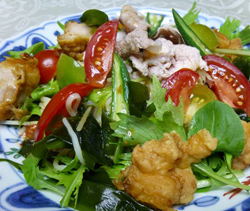

冷麺サラダ風
- 調理時間：30 分
- （一人当たり）
- カロリー：700kcal
- たんぱく質：33.6g
- 脂質：21.8g
- 塩分：5.9g


＜２人分＞
- 中華麺
- ２玉
ゴマダレ
- ・白練りごま
- 大さじ３
- ・醤油
- 大さじ３
- ・酢
- 大さじ４
- ・砂糖
- 大さじ２
- ・水
- 大さじ２
- ベビーリーフ
- １パック
- 水菜
- １／２株
- ミニトマト
- ４個
- オクラ
- ２本
- 生ワカメ
- ５０ｇ
- ミョウガ
- １本
- 鶏から揚げ
- ３個
- 豚肉（豚しゃぶ用）
- ７０ｇ


-
具の準備をする。
・水菜は３～４㎝長さのザク切りにする。ミニトマトはくし切りにする。オクラはサッとゆがいて縦半分に切る。
・ワカメは食べやすい大きさに切る。ミョウガは薄切りにする。鶏から揚げは一口大に切る。
・冷しゃぶ用の豚肉は、熱湯にくぐらせ火が通れば氷水で冷やす。
・ベビーリーフは洗ってザルにあげ、水気をきる。 - ゴマダレをつくる。
・タレは材料をよく混ぜ合わせる。
（お好みで、おろし生姜やおろしにんにくをいれてもおいしい。） - 鍋にたっぷりの水をいれて沸かし、中華麺をゆでる。
- 茹で上がったら、しっかりもみ洗いをしてから水を切る。
- 器に麺、具を盛り付け、食べる直前にゴマダレをかける。
冷麺サラダ風
暑い夏は食欲が落ち、どうしても冷たいめん類が多くなってしまいます。しかし、めん類だけを摂りすぎて、糖質過多になってしまうと代謝がスムーズにいかず、体がだるいとか、疲れやすいという症状が現れることがあります。このだるさを解消するには、糖質の代謝をスムーズにするビタミンＢ１を一緒に摂る必要があります。ビタミンＢ１は豚肉、玄米、緑黄色野菜などにも含まれます。今回のレシピは、めん類だけでなくたっぷり食材を合わせていますので一皿で栄養満点。夏の麺もひと手間かけるだけで彩りも栄養素もスペシャルな一皿に変身！おススメです。